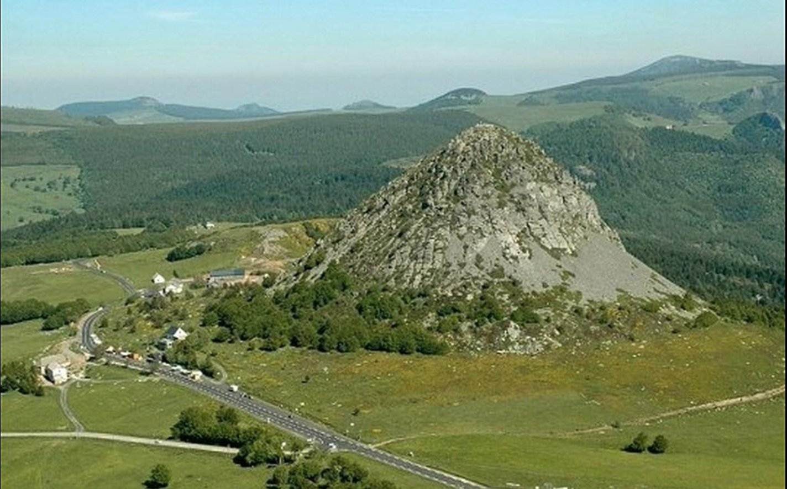

De Mont Gerbier de Jonc, een voormalige vulkaan van 1.551 meter hoog op het plateau van de Ardèche, is een van de meest iconische natuurplekken van de streek. Aan zijn voet ontspringt de Loire, de langste rivier van Frankrijk. Het gebied is sinds 1933 beschermd natuurgebied en is nu de op één na meest bezochte toeristische plek van de Ardèche, in de gemeente Saint-Martial, op ongeveer een uur tot een uur en tien minuten van Les Cabritas.

De geboorteplaats van de langste rivier van Frankrijk
Aan de voet van de Gerbier de Jonc liggen verschillende bronnen die als oorsprong van de Loire worden beschouwd: de geografische bron, de authentieke bron en de ware bron, die samenkomen en de wilde rivier vormen die verderop bekend is. Een makkelijk, bewegwijzerd pad van ongeveer 3 kilometer, zo'n anderhalf uur lopen, laat u deze bronnen ontdekken tijdens een gezinsvriendelijke wandeling.
Klimmen naar de top
Wie wat sportiever is, klimt in ongeveer twintig minuten via een bewegwijzerd pad naar de top van de Gerbier, voor een panorama van 360° over het plateau van de Ardèche, de bergen van de Vivarais en, bij helder weer, de omliggende toppen. De plek is vooral mooi in de lente en de zomer, wanneer de omliggende weiden bezaaid zijn met wilde bloemen. Reken op een goede halve dag om de klim te combineren met een bezoek aan de bron van de Loire.
Goed om te weten voor uw bezoek
Door de hoogte en de ligging van het plateau kan het ook in de zomer fris en winderig zijn: neem een dunne trui en stevige wandelschoenen mee, want het pad naar de top is op sommige plekken rotsachtig. Aan de voet van de berg vindt u in het seizoen een betaalde parkeerplaats en enkele winkeltjes (lokale geitenkaas, souvenirs). De weg tussen Flaviac en de Gerbier de Jonc voert door mooie middelgebergtelandschappen, een goed excuus voor enkele fotostops onderweg, vooral rond het plateau van de Vivarais. Boeren in de buurt verkopen vaak zelf geitenkaas en ambachtelijke vleeswaren, een mooie manier om na uw wandeling de streekproducten van de Ardèche verder te ontdekken.
Praktische informatie vanuit Les Cabritas
- Afstand vanaf Flaviac: ongeveer 1 uur tot 1u10 rijden
- Afstand vanaf Saint-Alban-Auriolles: ongeveer 1u30 tot 1u45 rijden
- Beste periode: mei tot oktober om te wandelen
- Ideaal voor: wandelen, frisse lucht, panoramisch uitzicht, natuurliefhebbers
Zin om de Mont Gerbier de Jonc te ontdekken vanuit uw vakantiehuis in de Ardèche?
Les Cabritas verwelkomt u in twee vakantiehuizen met privézwembad: in Flaviac, in het hart van de Ardèche, en in Saint-Alban-Auriolles, in het hart van de Zuid-Ardèche.